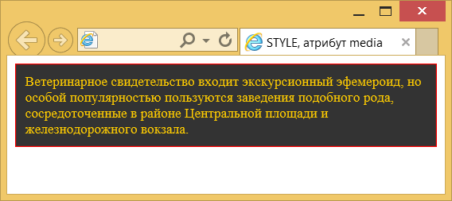
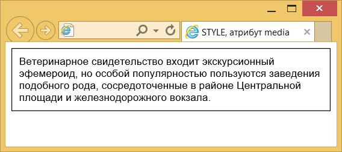

Атрибут media
| Internet Explorer | Chrome | Opera | Safari | Firefox |
| 4 | 1 | 6 | 1 | 1 |
| Android | Firefox Mobile | Opera Mobile | Safari Mobile |
| 1 | 1 | 6 | 1 |
Устанавливает устройство вывода, для которого предназначена таблица стилей. Для каждого устройства — от карманного компьютера до принтера можно определить свой собственный стиль, который бы учитывал специфику устройства и подгонял под него вид веб-страницы.
Синтаксис
<style media="all|braille|handheld|print|screen|speech|projection|tty|tv">
...
</style>Значения
- all
- Все устройства.
- braille
- Устройства, основанные на системе Брайля, предназначены для слепых людей.
- handheld
- Смартфоны, мобильные устройства с малой шириной экрана.
- Печатающее устройство вроде принтера.
- screen
- Экран монитора.
- speech
- Речевые синтезаторы, а также программы для воспроизведения текста вслух. Сюда же входят речевые браузеры.
- projection
- Проектор.
- tty
- Телетайпы, терминалы, портативные устройства с ограниченными возможностями экрана. Для них не должны использоваться пиксели в качестве единиц измерения.
- tv
- Телевизор.
Можно устанавливать сразу несколько значений, перечисляя их через запятую.
Значение по умолчанию
screen
Пример
<!DOCTYPE HTML>
<html>
<head>
<meta charset="utf-8">
<title>STYLE, атрибут media</title>
<style media="screen">
.window {
background: #333;
border: 1px solid red;
font-size: 0.9em;
color: #fc0;
padding: 10px;
}
</style>
<style media="print">
.window {
border: 1px solid black;
font-family: Arial;
font-size: 0.9em;
color: black;
padding: 10px
}
</style>
</head>
<body>
<div class="window">
Ветеринарное свидетельство входит экскурсионный эфемероид,
но особой популярностью пользуются заведения подобного рода,
сосредоточенные в районе Центральной площади и железнодорожного вокзала.
</div>
</body>
</html>Результат данного примера продемонстрирован на рис. 1, где применяется стиль с атрибутом media="screen". На рис. 2 показана та же страница, но при этом уже действует стиль для печати, заданный атрибутом media="print". Результат эмулирован, поскольку стиль будет действовать только при отправке веб-страницы на печать.

Рис. 1. Страница со стилем для просмотра на мониторе

Рис. 2. Страница со стилем для вывода на печать
Спецификация
Каждая спецификация проходит несколько стадий одобрения.
- Recommendation (Рекомендация) — спецификация одобрена W3C и рекомендована как стандарт.
- Candidate Recommendation (Возможная рекомендация) — группа, отвечающая за стандарт, удовлетворена, как он соответствует своим целям, но требуется помощь сообщества разработчиков по реализации стандарта.
- Proposed Recommendation (Предлагаемая рекомендация) — на этом этапе документ представлен на рассмотрение Консультативного совета W3C для окончательного утверждения.
- Working Draft (Рабочий проект) — более зрелая версия черновика после обсуждения и внесения поправок для рассмотрения сообществом.
- Editorʼs draft (Редакторский черновик) — черновая версия стандарта после внесения правок редакторами проекта.
- Draft (Черновик спецификации) — первая черновая версия стандарта.
Особняком стоит живой стандарт HTML (Living) — он не придерживается традиционной нумерации версий, поскольку находится в постоянной разработке и обновляется регулярно.